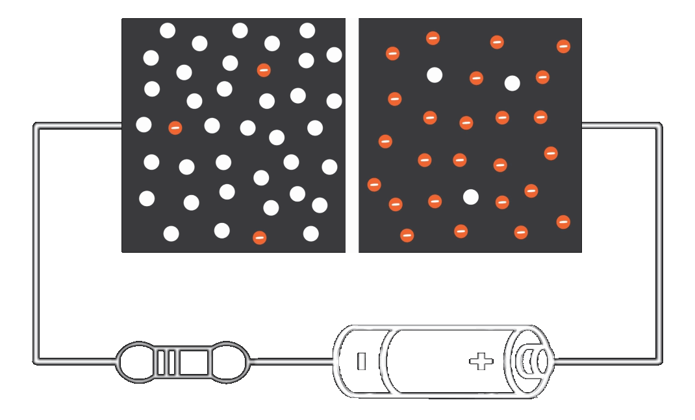

Reverse Bias Characteristics of P-N Junction Diode

Battery Voltage =
Voltage across the Diode =
Current Value =
Identify the P substrate and N substrate. To start, Click the 'Form P-N Junction' button given below. After pressing each button, observe the changes in the circuit first and then read here.
While combining both flavours during fabrication, a junction is formed between p-region and n-region.
Click "Diffusion" button to see further changes in an unbiased PN junction diode.
Immediately after the junction is formed, due to non-uniform concentration on both sides,
electrons and holes starts moving across the junction. This is Diffusion.
Now, click "Apply Voltage" button to turn on the supply and vary the slider in steps of 8 V to
observe depletion region extension.
Immobile charges are accumulated near the junction and acts as a barrier (depletion region) and stops the flow
of charge carriers across the junction.
Now , the negative is connected to p region and positive is connected to n region. Keep on varying the slider in step of 8 V
to see what is coming up.
YES ! Now the flow of electrons and holes across the junction is RESTRICTED
which is nothing but the negative terminal attracts holes in the p region leaving some immobile charge carriers.
Similarly for n region vice versa.
Very small amount of current flows due to restricted movement of charge carriers. Hence diode never passes barrier potential as depletion region keeps on widens thus increasing the barrier potential.
Reverse bias condition is similar to a parallel plate capacitor.
At some point if reverse voltage is increased beyond particular value say 50 V for 1n4001 diode,
large reverse current will flow damaging the crystal structure of the diode.
1. To plot the I-V Characteristics of PN junction diode under reverse bias condition.
2. To find the reverse breakdown voltage and static resistance during reverse bias.
2. To find the reverse breakdown voltage and static resistance during reverse bias.
Depletion Region
While diffusion occurs, electrons from n region enter into p region and recombine with acceptor atoms which are holes.
Similarly, holes from p region enter into n region and recombine with donor atoms which are electrons.
This recombination of electrons and holes creates :
Immobile positive ions on n region and immobile negative ions on p region.
These immobile charges acuumulated near the junction is called depletion region / barrier of a diode.
After the barrier is formed, the movement of electrons / holes across the junction will be stopped.
This recombination of electrons and holes creates :
Reverse Biased
When the p-region is tied up to a lower potential and the n-region to a higher potential
the biasing condition is reverse biased.
The barrier has a voltage level, more likely it act as an electric field.
As the depletion region keeps on increasing , we cannot provide voltage above the barrier potential and hence the flow of
Thus the diode is in reverse biased mode.
charge carriers across the junction is restricted.
Depletion Region widening
As we observe the connection in reverse bias, the negative terminal attracts the holes present in the p region.
Similarly, the positive terminal attracts the electrons present in the n region.
Thus more immobile ions accumulated on both sides increasing the barrier potential.
Hence it is not possible to overcome the barrier and operate the diode in conduction state.
Step 1:
Identify the P substrate and N substrate. Click the 'Form P-N Junction' button and observe the changes.
Step 2: After the junction is formed, click 'Diffusion' button and observe changes.
Step 3: Switch ON the power supply by clicking the 'Apply voltage' button.
Step 4: Gradually increase the battery (50V DC) voltage from 0 V in steps of 8 V and observe changes by varying the voltage slider.
Step 5: Observe the changes happening inside the device while performing Step 4.
Step 6: Note down the ammeter and voltmeter(Diode Voltage) readings.
Step 7: From the experiment carried out, find the reverse breakdown voltage and static resistance during reverse bias (R= V/I).
Step 8: Plot the readings in a graph and infer the I-V characteristics of the diode.
Step 2: After the junction is formed, click 'Diffusion' button and observe changes.
Step 3: Switch ON the power supply by clicking the 'Apply voltage' button.
Step 4: Gradually increase the battery (50V DC) voltage from 0 V in steps of 8 V and observe changes by varying the voltage slider.
Step 5: Observe the changes happening inside the device while performing Step 4.
Step 6: Note down the ammeter and voltmeter(Diode Voltage) readings.
Step 7: From the experiment carried out, find the reverse breakdown voltage and static resistance during reverse bias (R= V/I).
Step 8: Plot the readings in a graph and infer the I-V characteristics of the diode.
At the end of the experiment, a student will able to explain :
What is PIV ?
When a PN junction diode is reverse biased ?
What is mobility of electrons ?
What is a depletion region ?
Why the depletion region keeps on increasing during reverse bias ?
When the barrier potential is created ?
Why the flow of charge carriers across the junction does not restarts during reverse bias ?
When a PN junction diode is reverse biased ?
What is breakdown voltage ?
What happens after the reverse breakdown ?
What are the applications of diode when operated in reverse bias condition ?
I-V relationship